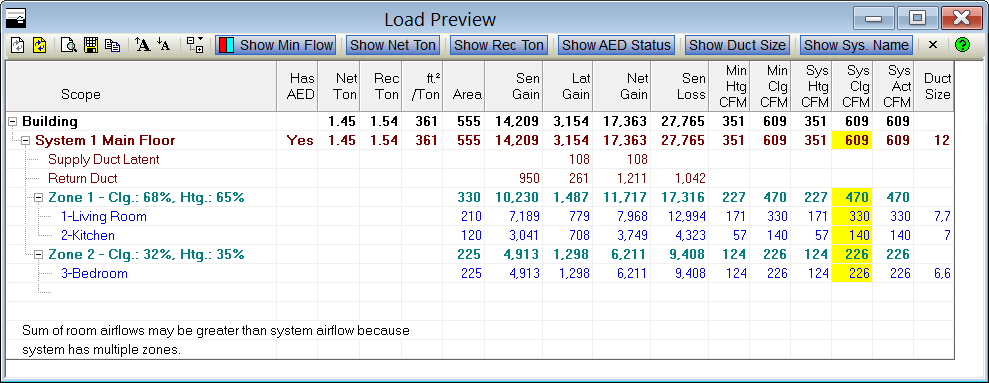
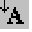

Load Preview (Project Menu) |
  
|
Load Preview (Project Menu) |
|
Icon: . Keyboard Shortcut: ALT, P, L
Displays the Load Preview window, which shows gain, loss and CFM values for the building and each system, zone and room in the project.

Refresh: Recalculates and refills the list.
Auto Refresh: When in the pressed down state, makes it so this window automatically updates itself whenever you change anything on any of the other windows that affect the calculations. It is best to only use this feature if you have a fast computer or have only a few rooms in your project.
Print Preview of Load Preview: Opens the Print Preview window displaying only the Load Preview Report.
Save Load Preview: Displays a "Save Load Preview As" dialog that lets you save the data in this window to a comma delimited text file. You can then open that file in a spreadsheet program such as Microsoft Excel.
 Copy to Clipboard: Copies the data in this window to the clipboard in a tab delimited format, which can then be pasted into a spreadsheet program such as Microsoft Excel.
Copy to Clipboard: Copies the data in this window to the clipboard in a tab delimited format, which can then be pasted into a spreadsheet program such as Microsoft Excel.
Increase Text Size: Increases the text size for the load preview grid.

Decrease Text Size: Decreases the text size for the load preview grid.Outline Level: Displays a menu that lets you globally collapse or expand the outline tree of rooms, zones and systems.
Show Min Flow: Toggles the visibility of the "Min Htg CFM" and "Min Clg CFM" columns.
Show Net Ton: Toggles the visibility of the "Net Ton" column (net tonnage).
Show Rec Ton: Toggles the visibility of the "Rec Ton" column (recommended tonnage).
Show AED Status: Toggles the visibility of the "Has AED" column (Adequate Exposure Diversity).
Show Duct Size: Toggles the visibility of the "Duct Size" column.
Show Sys. Name: Toggles whether the system name is included on the System row(s).
Hide Load Preview button: Closes the Load Preview window.
Columns
Scope: Shows the level of load displayed. Loads are subtotaled at the building, system, zone and room levels.
Note: For zones in multizone systems, the zone rows show the zone number followed by the percent of sensible gain and percent of sensible loss that this zone contributes to the totals for all zones in the system. For example, a zone row might say, "Zone 1 - Clg.: 67%, Htg.: 65%," which would indicate that this zone's sensible gain is 67% of the sensible gain total of all zones in the system, and this zone's sensible loss is 65% of the total sensible loss of all zones in the system.
AED: Displays "Yes" if the system has Adequate Exposure Diversity, or "No" if it does not.
Net Ton: Shows the tonnage calculated by simply adding the sensible and latent cooling loads.
Rec Ton: Shows the tonnage calculated by determining the capacity required to meet both the sensible and latent gains, according to the Percent Sensible Capacity of each system. This column is only reported at the building and system level.
ft² / Ton: Shows the square feet per ton at the building and system levels. The tonnage used here is the Recommended tonnage, as described above.
Area: Area in square feet.
Sen Gain: Sensible gain, in Btuh.
Lat Gain: Latent gain, in Btuh.
Net Gain: Sensible plus latent gain, in Btuh.
Sen Loss: Sensible loss in Btuh.
Min Htg CFM: Minimum heating CFM requirement, based on the sensible loss. You can turn this column on or off by clicking Show Min Flow in the toolbar.
Min Clg CFM: Same as Min Htg CFM column, but for cooling.
Sys Htg CFM: At the room and zone levels, if the System Air Type input is set to Auto, shows the minimum heating CFM requirement. If set to Fixed, shows the room or zone's portion of the system CFM (or System CFM Htg) based on the ratio of the room or zone's sensible loss to that of the system. At the system level, shows the calculated system heating CFM (if System Air Type is Auto), or the CFM entered for the system (if System Air Type is Fixed). At the building level, shows the sum of this quantity at the system level. The value in this column is highlighted in yellow if it is the CFM chosen as the actual system CFM, otherwise the value in the Sys Clg CFM will be highlighted.
Sys Clg CFM: Same as Sys Htg CFM column, but for cooling.
Sys Act CFM: The actual CFM delivered. Depending on the setting of the Airflow Option input, this value will equal either the Sys Htg CFM or the Sys Clg CFM column.
Duct Size: The calculated size of the duct(s). If the shape of the duct is rectangular, the size shown is the Width x Height of the duct, in inches. If the duct is round, it is the diameter. For runouts, the first number is the number of runouts required for the room. If a room requires 3 runouts, each sized at 8 inches in diameter, the text would be 3-8. If a room required 3 runouts, each being 4 inches wide by 6 inches high, the text would be 3-4x6. For ducts drawn on Drawing Board with graphic Manual D Ductsize, runout ducts for the rooms are shown in a comma separated list. For example, if a room requires two round six inch ducts the text would be 6,6.
For ducts drawn on Drawing Board or created on the Tabular Manual D Ductsize window, if there is a non-main supply trunk that feeds only one zone, its size will be shown for the Zone row for that zone. If multiple supply trunks in series feed only one zone, the most upstream of those trunks will have its size shown on the Zone row.